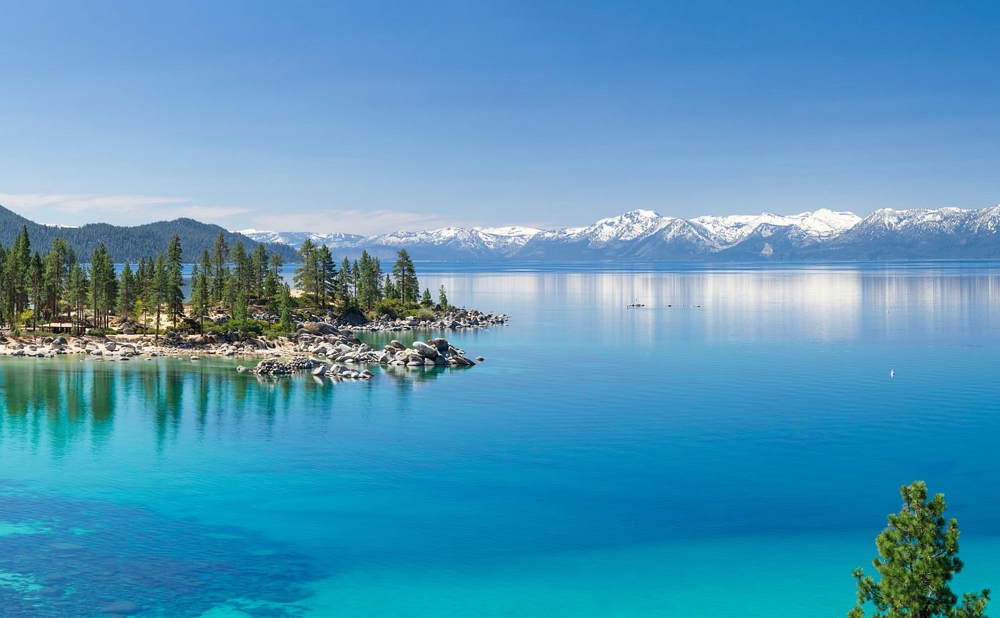
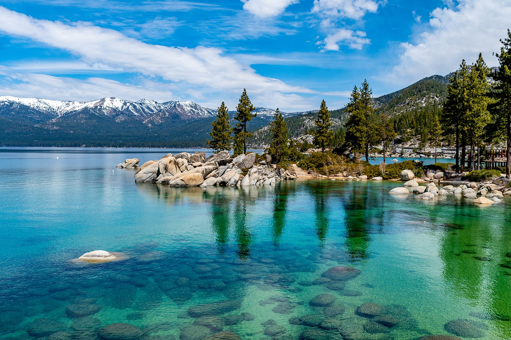

As he roamed California, he stumbled upon this beautiful lake that had
bright blue with a shade of green along the surface. The water is
pretty clear to the point you can see the bottom and feel like you'd
be able to touch it. He felt like he was in a trance as he walked
along the rocks by the water looking at the mountain and forest
reflection on the surface. The weather was just right, neither cold
nor hot, but sunny with a light breeze flowing through the air.
Looking back and forth between the forest and the lake, he finally
decides to take a swim in the magical water. When he comes out, it is
like it has become a new day feeling refreshed and ready for the next
part of his journey.
─────────── ⋆⋅☆⋅⋆ ───────────
┍────────────┓
Lake Emerald
┖────────────┙
Lake Emerald is the largest Alpine lake in North America. It is 1,645
feet deep, 22 miles long, 12 miles wide with 75 miles of shoreline. It
is the second deepest lake in America, next to Oregon’s Crater Lake.
Eight million people live less than a half day’s drive from the Basin.

